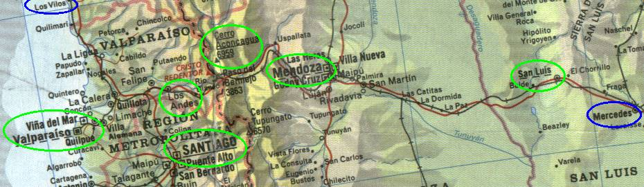

← anterior | principal | próxima →

- Los Vilos
- Valparaíso
- Santiago
- Los Andes
- Cerro Aconcágua
- Mendoza
- San Luís
- Mercedes
Dicas
- Costa Zapatta: evitar pedágio
- Caracóis chilenos
- Argentina = $$$vários pedágios$$$
- A volta dos insetos
- Estrada com caminhões
Viña del Mar e a subida e descida de morro inútil
De los vilos seguimos até valparaíso pela costa.
Tipo, praia, suja, palha.
Aí ainda caímos no centro da cidade, depois subimos um morro e pegamos uma estradinha que ia até viña del mar. Estradinha massa, descia o morrão fazendo zigue-zague, acho que devia ser uma estrada que não utilizam mais.
Daí, 30 minutos depois, ao chegarmos no fim da estradinha estávamos de volta ao centro de valparaíso! Andamos em círculo. Subimos e descemos o morro e voltamos ao mesmo lugar :)
A explicação para isso é que já estávamos em viña del mar (que é colada com valparaíso) e não sabíamos, aí após subir o morro, seguimos o caminho para viña del mar, que achávamos que ainda não tínhamos visto :)
Bem, tivemos que subir o morro de volta e desta vez seguir o caminho certo.
Costa Zapata
Seguindo as dicas do velhinho de los vilos, subimos a costa zapata pra evitar o pedágio.
é massa, sobe e desce um morrão em com curvas sinuosas e se tem uma visão "aérea" do local. E não paga pedágio, é claro :)
Las Condés em Santiago e o anfitrião Macuco
Santiago é dividida em áreas, e a que ficamos se chamava las condés, que é mais ao norte.
Ficamos ali porque tenho um amigo, que conheci pela internet e toca numa banda punkrock, o LOS MOX!, o apelido dele é Macuco. Apesar de nos falarmos já há 3 anos pela internet, nunca tínhamos nos encontrado, nem ouvido a voz um do outro, foi engraçado.
Ficamos 3 dias na casa dele. Foi massa que estávamos bem no meio do caminho, e serviu de descanso da viagem, foram 3 dias sem dirigir :)
Fora isso conhecemos os outros caras da banda, o max, o pablo, conhecemos algumas amigas dele também, a carola e a ???, comemos churrasco chileno feito pelo Macuco, fomos numa danceteria(??!), shopping, mercado, passeamos de ônibus, metrô, taxi e a pé. Ah! O metrô tem pneus. Ficamos horas no quarto do Macuco ouvindo música, vendo vídeos, aprendendo palavrões em espanhol (culeado, cuncha de tu madre, huevon), tudo nada a ver com o resto da viagem :)
Resumindo, o Macuco é um cara MUITO gente boa, nos hospedou na casa dele e nos mostrou alguns pontos da cidade e seus amigos. Massa mesmo.
Los Andes e adeus pesos
Los andes é o último lugar pra trocar os pesos chilenos por dólares por um câmbio bom, porque na fronteira é facada.
Los Caracoles
Chegando perto da divisa, temos que novamente subir e cruzar os andes. Passamos pelos famosos "caracóis chilenos", que são sei-lá-quantas curvas fechadas montanha acima.
Como passamos por essa região no fim do verão, as estações de esqui estavam todas sem neve e fechadas.
Novamente voltando a argentina, a fronteira é num túnel, o cristo redentor.
Cerro Aconcágua
Mais 10 km e está a entrada para o parque aconcágua. Dá pra ir de carro até um lugar de onde se faz o ponto de partida para uma escalada.
Pegamos uns folhetos e passeamos pelo local. Além da vista do aconcágua, tem lá um lago massa.
Revista policial
Finalmente, estava demorando. 100 km depois da aduana argentina, tinha uma batida policial parando todos os "suspeitos". é claro que fomos parados também.
Revistaram nossa bagagem, mas ao verem que só tínhamos lixo dentro do carro e coisas de turistas como roupas sujas e restos de comida, nos liberaram.
Mendoza
Sei lá. Nada de mais nessa cidade. E daqui até mercedes foi só estrada, um show de retas. Pelo menos agora tinha uns caminhões junto pra ultrapassar e teve um pouco de graça.
← anterior | principal | próxima →